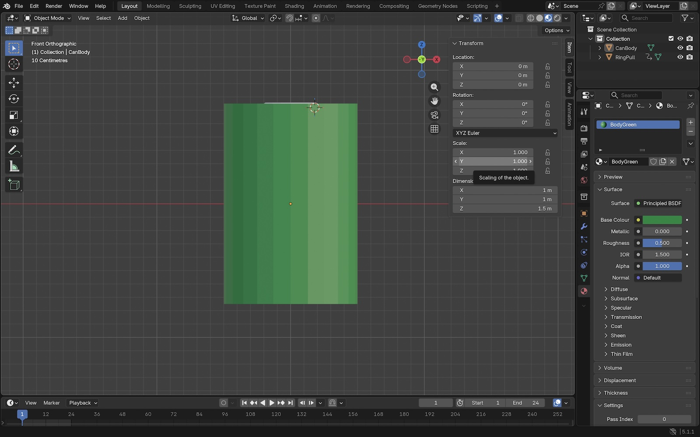
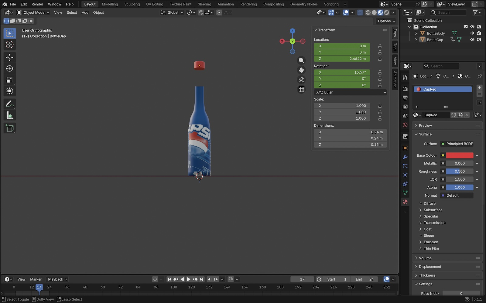
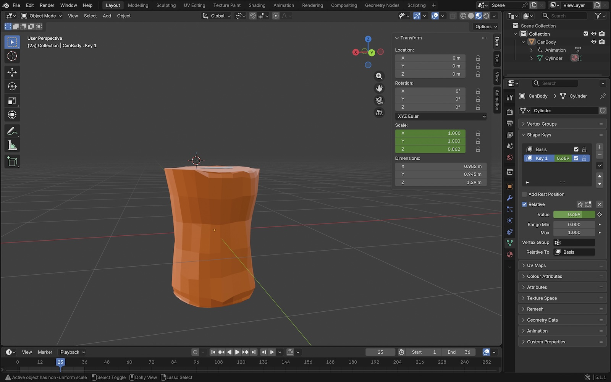
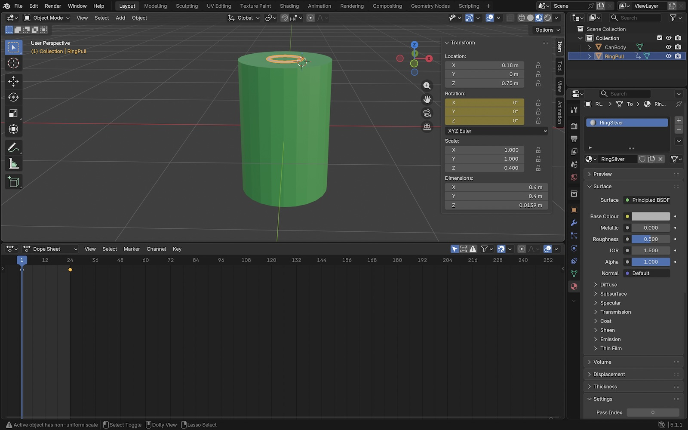

About
For my Web 3D module assignment I built a small site that lets you interact with three soft drinks (Pepsi, 7Up and Mirinda) as 3D models in the browser. Each product has its own page where you can rotate the model, play an animation, and switch between lighting setups. This About page goes through how I built it and what I tested.
3D models
I modelled all three products in Blender from scratch. The 7Up and Mirinda cans started as cylinders with insets and bevels for the top recess and a small flattened ring pull tab on top.

The Pepsi bottle was harder because of the curved shape, so I drew a 2D profile and used a Screw modifier to revolve it, with the cap as a separate object so it can pop off in the animation.

For Mirinda I used shape keys and the sculpt tools to deform the can into a crushed shape, and the can also shrinks in height on the same timeline so the deformation and the height change play together over 1.5 seconds.


Design
I used Bootstrap 5 for the responsive grid and navbar, with a Drinks dropdown linking to the three product pages. The Three.js scenes each use a HemisphereLight and a DirectionalLight together, which gives soft natural lighting without me having to set up multiple manual spotlights. I added a Lighting button on each product page that cycles between three setups (balanced, dramatic, soft) so users can see the model under different conditions.
Integration
I found three short sound clips on freesound.org for the cap pop, ring pull and crush. The ring pull clip had a long tail that didn't fit the animation timing so I trimmed it in GarageBand. The other two were short enough to use as is. Each clip plays when its animation button is clicked.
Interaction
Each product page uses Three.js OrbitControls so you can rotate the model by dragging and zoom by scrolling. The main button plays the model's animation. The Wireframe button switches between the solid look and the wireframe view. The Lighting button cycles through the three lighting setups.
Implementation
I tested the site three ways. First, functional testing across Chrome and Safari to confirm every button and page works. Second, a user walkthrough where I asked two friends to use the site without instructions and watched what they did. Third, I tested in Chrome DevTools at desktop and mobile widths.
Testing changed the site in real ways. The ring pull on the cans was originally tucked inside the recess on top, realistic for a real soda but invisible from any side angle on the site, so I lifted it to sit flush with the rim.
One tester said "it took me a minute to realise I could drag the bottle around" so I added a small hint label above each 3D canvas that says "drag to rotate".
I also caught a colour collision during my own testing: the Pepsi bottle's neck was disappearing into the Pepsi blue scene background because the neck material was the same blue as the background. Switching the backgrounds on all three product pages to off white fixed it and the models stand out clearly now.
Deeper Understanding
The Pepsi bottle was the part of the project that took the longest. The curved silhouette had to be drawn as a 2D profile and revolved with a Screw modifier, and I kept the cap as a separate object so it can pop off cleanly during the animation. The body has two materials applied to it, a label texture for the front and solid blue for the neck and shoulder, which was tricky because the way Blender stores the materials didn't match how the glTF export handles them.
For the animations I wanted to do more than just rotating the models. The bottle cap pops off with a small upward arc and a forward tilt. The 7Up ring pull pivots up around a fake rivet point I set as the object's origin. The Mirinda can crushes using a sculpted shape key, and shrinks in height on the same timeline so the dent and the height change play together.
I also wrote a custom GLSL shader for the label area of the bottle because I wanted it to feel premium. It works, you can see a soft highlight band sweeping slowly up the bottle, but the trade off is that I had to replace the standard material with a ShaderMaterial which doesn't react to scene lights. The neck and cap still respond to the Lighting button, the labelled body doesn't. The moving highlight gives it depth instead, and I'm pretty happy with how it turned out.
The audio is synced to each animation. Clicking a button triggers the animation and the matching sound at the same moment, so when the cap pops you hear the pop, when the ring pull lifts you hear the open, and when the can crushes you hear the crunch.
Implementation and publication
Here's where to find this project.
GitHub: https://github.com/Hamza-hi80/3d-app
Live site: https://users.sussex.ac.uk/~hi80/3dapp/index.html